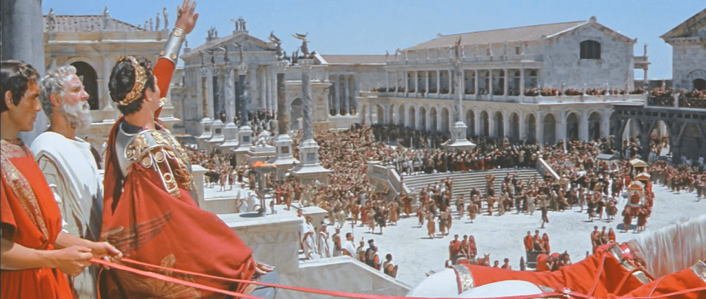

Bloque 1: La verdadera Edad Media y la cultura cristiana
Antes de la Edad Media: ROMA
Para comprender el origen de la Edad Media, debemos conocer lo que fue antes de ella.

En este bloque introductorio hablaremos del gran Imperio Romano.
Instrucciones:
1. Leer este artículo sobre la caída del Imperio Romano
2. Escribe los principales motivos de la caída de Roma en máximo 2 párrafos. (Llévalo a la clase en una hoja para compartir con tus compañeros)
Introducción a la Edad Media
- introducción
La Edad Media no fue un tiempo vacío ni oscuro. Gracias al cristianismo, la esclavitud fue rechazada, se fundaron escuelas monacales y se conservaron los textos de la Antigüedad. Carlomagno impulsó la escuela palatina y se crearon universidades como París, Oxford o Salamanca. Los monjes, con la regla “ora et labora”, fueron guardianes de la cultura y la civilización.
- Actividad
1. Ver el video del P. Javier Olivera Ravasi, historiador argentino.
2. Realizar un resumen escrito sobre el video. El resumen será presentado en clase y escrito a mano en 2 carillas.